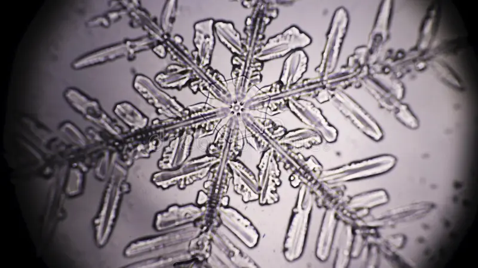
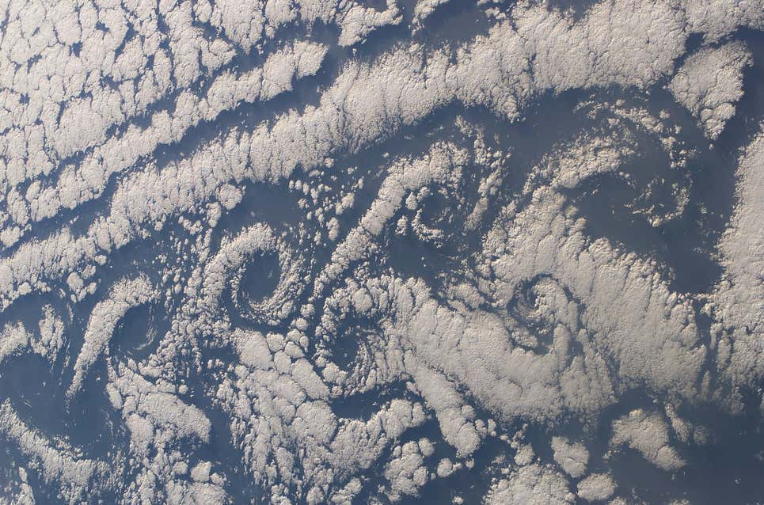
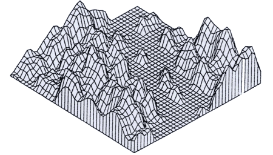

𝐈𝐧𝐬𝐭𝐚𝐠𝐫𝐚𝐦
𝐅𝐚𝐜𝐞𝐛𝐨𝐨𝐤
𝐈𝐧𝐢𝐜𝐢𝐨
𝐇𝐢𝐬𝐭𝐨𝐫𝐢𝐚
𝐌𝐚𝐬 𝐢𝐧𝐟𝐨
𝐃𝐢𝐬𝐞ñ𝐨
𝐅𝐮𝐞𝐧𝐭𝐞𝐬
Fractales en la naturaleza
Como se forman
Los fractales se forman en la naturaleza a través de patrones repetitivos que se repiten a diferentes escalas, como las ramas de un árbol o las nubes. También se forman a través de procesos recursivos o iterativos, donde un patrón se repite una y otra vez. Algunos ejemplos de fractales en la naturaleza son las costas, las montañas, los árboles y las nubes. Además, los fractales se utilizan para modelar fenómenos naturales como el ADN y las algas.
1. Crecimiento iterativo donde patrones básicos se repiten
2. Fuerzas físicas que buscan equilibrio y eficiencia
3. Distribución óptima de recursos, energía o espacio
4. Principios matemáticos donde pequeñas variaciones crean complejidad
5. Procesos de retroalimentación donde cada etapa influye en la siguiente
En esencia, son el resultado de reglas simples aplicadas repetidamente que generan estructuras complejas.
- Col Romanesco:
Esta verdura tiene una estructura que se repite en espirales, creando un hermoso patrón fractal.
-
Copos de nieve:
Cada copo de nieve tiene una forma hexagonal única, pero todos siguen un patrón fractal en su estructura.
-
Helechos:
Las hojas de los helechos muestran un patrón que se repite en cada nivel de la planta.
-
Nubes:
Las formaciones de nubes a menudo presentan patrones fractales, donde las nubes más pequeñas se agrupan en formas más grandes.
-
Ríos y montañas:
La forma en que los ríos se ramifican y las montañas se erosionan también exhibe características fractales.
-
Sistema circulatorio:
Las venas y arterias del cuerpo humano se ramifican de manera fractal, optimizando el flujo sanguíneo.
-
Grietas en la tierra:
Las grietas que se forman por la sequía o el hielo siguen patrones fractales en su distribución.
Ejemplos


